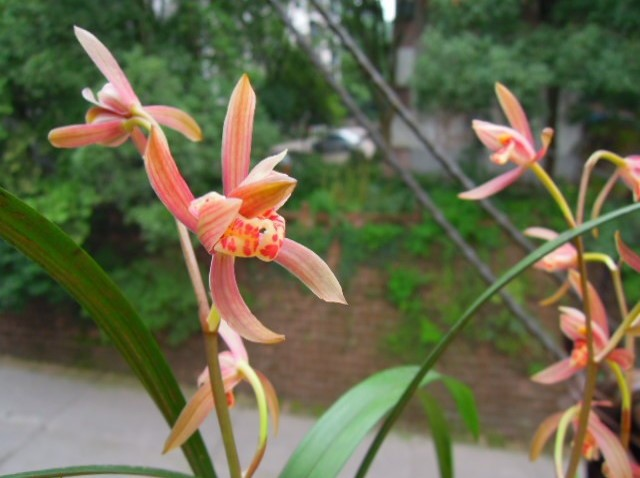
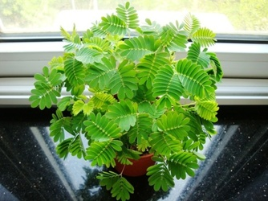
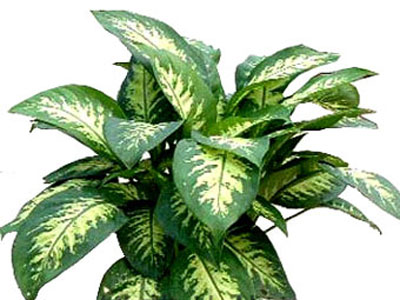

常见有毒副作用的花卉
作者：佚名 时间：2017-06-06

品红花——品红花朵鲜丽，绽放长久，在花丛中分外抢眼，在国外被称为“圣诞花”。但是，一品红却极毒，且全株均含毒。其茎叶中的白色乳汁，极易粘在人手和胳膊上，使皮肤红肿。如果误食了其茎叶，会引起中毒死亡。
含羞草——含羞草之所以一触即“羞”，是由于它体内含有含羞草碱，这是一种毒性很强的有机物。如果人们频繁接触，能使人眉毛稀疏，毛发变黄，严重的可致头发脱落或出现周身不适等症状。
万年青——其叶色先奇绿，后呈艳红，观赏价值较高。但万年青花叶内含有草酸和天门冬素，其枝叶的汁液具有很强的毒性，一旦触及皮肤，奇痒难熬。尤其是它的果实，毒性更大，误食后会引起口腔、咽喉肿痛，甚至伤害声带，使人喉声哑，故有人称万年青为“哑巴草”，人畜误食还会带来生命危险。
写评论

路边的野花不要采，好看的外表不知道内部有多大的毒性
2017-06-07举报 分享 回复
没想到含羞草也会有毒性，本来还准备买一盆
2017-06-08举报 分享 回复
想买还是可以买的，提前了解，注意养殖的方法，有些伤害是可以避免的
2017-06-10举报 分享 回复